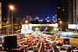

travel

Definition: Travel is the movement of people between distant geographical locations. Travel can be done by foot, bicycle, automobile, train, boat, bus, airplane, ship or other means, with or without luggage, and can be one way or round trip. Travel can also include relatively short stays between successive movements, as in the case of tourism.
Source: Wikipedia
Wikipedia Page
Wikidata Page
Occurs in: